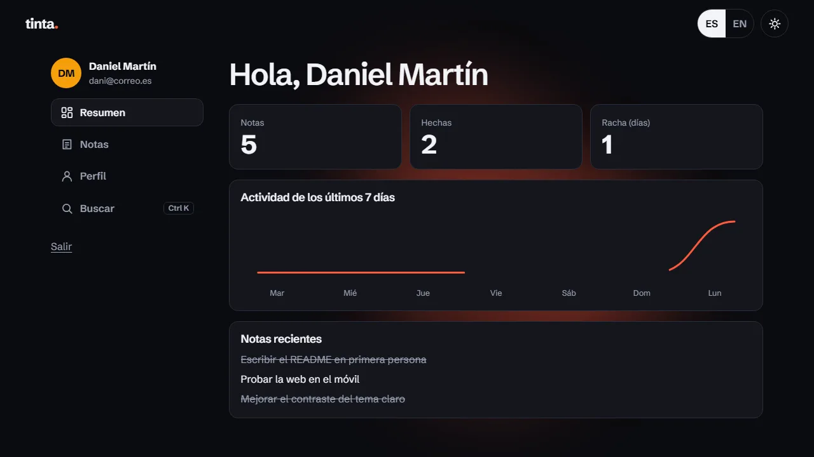

Login animado
Una pantalla de acceso con registro, inicio de sesión y un mini panel, todo en el navegador y sin servidor. Cambia entre español e inglés y entre tema oscuro y claro con una mancha de tinta que se extiende desde el botón. Es una demo: los datos se quedan en el navegador de quien la abre, no es seguridad real.

Qué hace
- Registro e inicio de sesión con una tarjeta que gira en 3D, errores que sacuden el formulario y confeti al crear la cuenta.
- Base de datos en el navegador (IndexedDB) con contraseñas guardadas con hash, bloqueo tras 5 intentos fallidos y sesiones que caducan.
- Tema claro y oscuro con una mancha de tinta que se extiende desde el botón, y español e inglés con el texto cambiando letra a letra.
- Mini panel con resumen y gráfica de actividad, notas con filtros y «Deshacer», perfil y buscador de acciones con Ctrl K.
Cómo funciona
Sin librerías ni servidor. Las contraseñas se guardan con PBKDF2-SHA256 (600.000 iteraciones y sal aleatoria) usando crypto.subtle, y de la sesión solo se guarda el hash del token.
La mancha de tinta usa la View Transitions API: calculo un polígono que crece desde el botón en cada fotograma. Si el navegador no la tiene, hace un fundido, y con prefers-reduced-motion el cambio es instantáneo.
Lo probé con un navegador controlado por código: contraste en los dos temas, teclado, 320 píxeles, texto al 200 %, nombres larguísimos con emojis y 200 notas.
Lo que aprendí
- A guardar datos en IndexedDB y a guardar contraseñas con hash, sal y comparación sin atajos.
- A animar el cambio de tema con View Transitions y un clip-path calculado en cada fotograma.
- A probar casos raros y a hacer accesible un giro 3D sin que el teclado entre en el formulario oculto.
Domótica